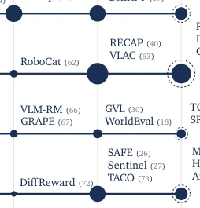
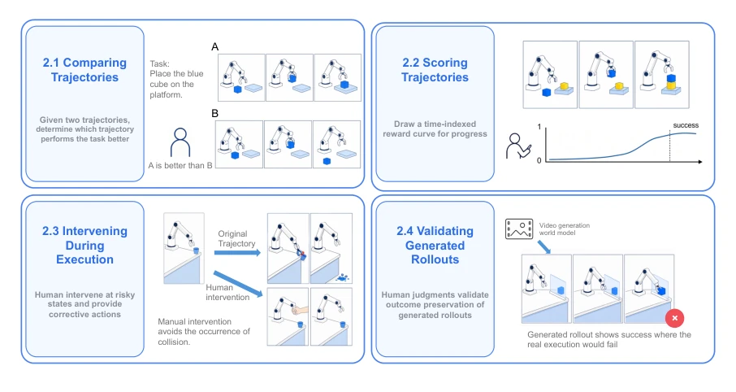
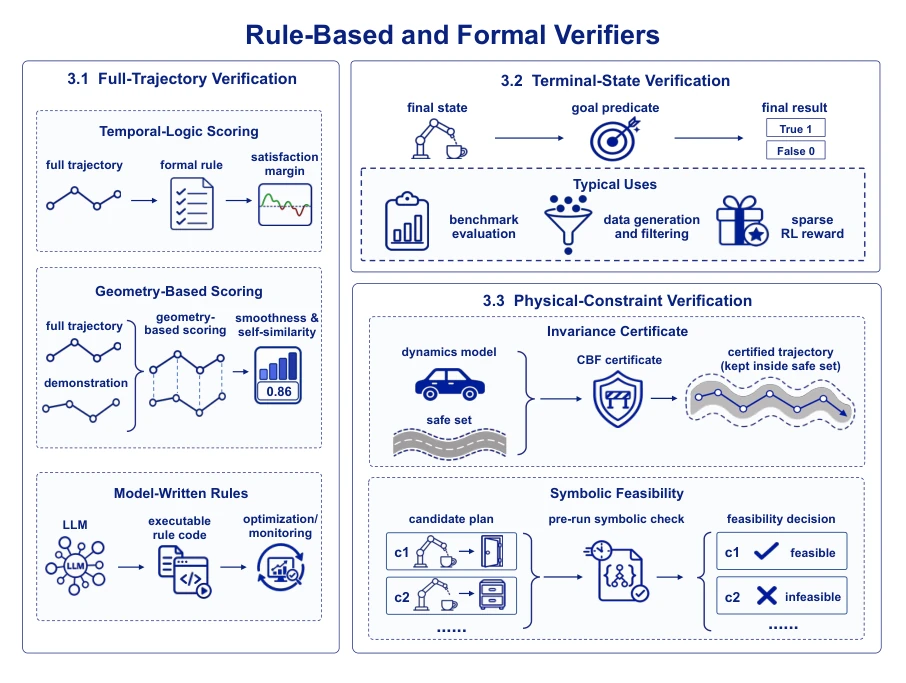
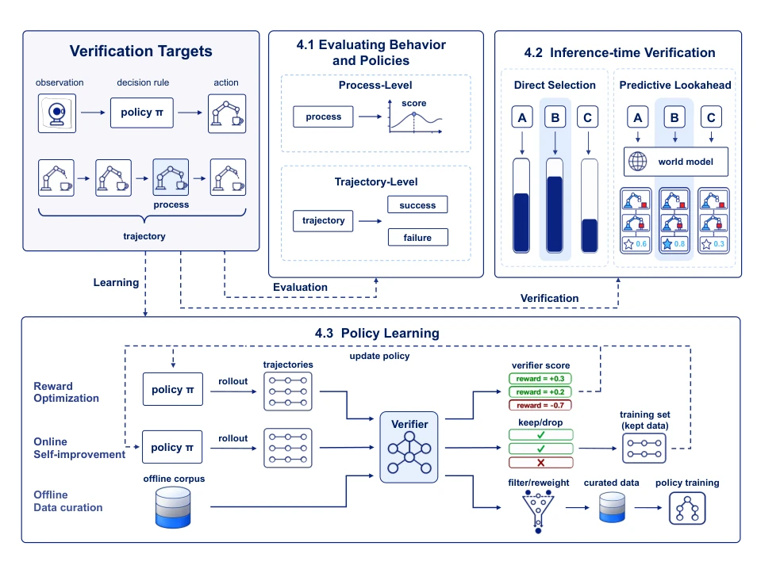
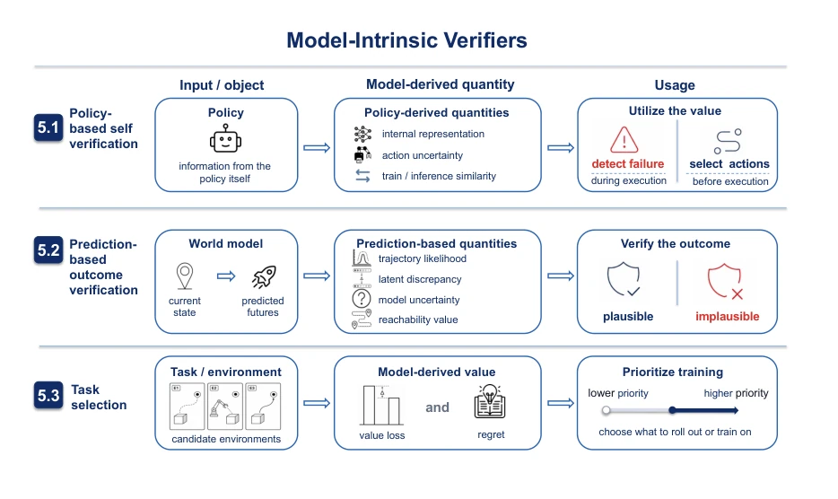

这篇综述给机器人领域的“自我感觉良好”泼了一盆冷水，核心观点“天下没有免费的检查器”（No Free Checker）简直是对当前盲目堆砌 Reward Model 和 VLM 验证器的当头棒喝。作者犀利地指出，随着验证器（Verifier）的可用性（Availability）提升——即更便宜、更快速、更密集——其可信度（Credibility）必然下降。人类验证器最准但太贵，规则验证器便宜但太死板，学习到的验证器便宜但容易“作弊”（Reward Hacking），模型内生的验证器最快但只反映模型自身状态而非真实任务。这就像在物理世界找完美裁判，要么花钱请人，要么用容易钻空子的规则，要么指望模型自己监督自己（这不就是让嫌疑人当法官吗？）。文章没有堆砌新模型，而是像法医一样解剖了现有150种验证器的“死因”，提醒研究者别被高评分迷惑，要警惕那些能“骗过”验证器但实际搞砸任务的策略。
This review pours cold water on the "self-satisfaction" in the field of robotics. The core viewpoint "There is no free checker" (No Free Checker) is simply a wake-up call to the current blind accumulation of Reward Models and VLM verifiers. The authors sharply point out that as the availability (Availability) of verifiers increases—meaning cheaper, faster, and denser—their credibility (Credibility) inevitably declines. Human verifiers are most accurate but too expensive, rule verifiers are cheap but too rigid, learned verifiers are cheap but prone to "cheating" (Reward Hacking), and intrinsic model verifiers are fastest but only reflect the model's own state rather than the real task. This is like finding a perfect referee in the physical world: either pay to hire humans, use rules that are easy to exploit, or rely on the model to supervise itself (isn't this letting the suspect be the judge?). The article does not pile up new models, but rather dissects the "cause of death" of existing 150 verifiers like a forensic pathologist, reminding researchers not to be confused by high scores, and to be wary of strategies that can "trick" the verifier but actually fail the task.
With the explosive growth of VLA models (such as RT-2 [1], OpenVLA [2]) and World Models (such as Cosmos [6], Genie 3 [7]), robot learning is shifting from purely pursuing scale to requiring reliable verification mechanisms. However, the complexity of the physical world makes verification exceptionally difficult: task success often relies on imperfect sensory observations [21-23], real-world robot trial-and-error costs are high [18, 20, 24], and intervention must occur before task completion to prevent hardware damage [25-29]. Existing work lacks systematic organization, leading researchers to blindly select verifiers, often falling into the trap of "high availability low credibility". For example, rule-based methods (such as SafeManip [37]) are cheap but rely on precise state estimation, failing once perception errors occur; while learned verifiers (such as RECAP [40]) can generalize, they are easily "deceived" during the optimization process, leading to strategies scoring high on the verifier but failing in reality (Reward Hacking). This paper aims to resolve this cognitive confusion, by comparing verifiers from different sources (human, rule, learned, intrinsic), revealing their inherent trade-offs, and pointing out the current lack of strict evaluation standards for the credibility of the verifiers themselves.

Figure 1 Representative systems by judge source and year, using the same five columns as Table 1. Disc area is the number of papers we cover in the corresponding year. Our search closes in early July 2026, so each 2026 disc carries a dashed ring at the full-year estimate, twice the observed count at the January-to-June rate.
The paper constructs a systematic classification framework, dividing approximately 150 verifiers into four major categories according to "judgment source", and introduces two dimensions "availability" and "credibility" for quantitative analysis. The overall logic is: first define the verifier as a mapping verifier: (context, candidate) -> score, then decompose by source. The first category is "Human Verifiers", including trajectory comparison (RoboArena [36]), scoring (Reward Sketching [35]), execution intervention (HG-DAgger [77]), and generated trajectory verification (GigaWorld-1 [20]), characterized by extremely high credibility but high cost. The second category is "Rule-based and Formal Verifiers", covering full trajectory verification (such as STL logic scoring [38, 52], geometric scoring [58], model-generated code [55]), terminal state checking (such as LIBERO [53]), and physical constraint verification (such as Control Barrier Functions PNCBF [28]), characterized by low cost but reliance on the accuracy of preset assumptions. The third category is "Learned and Pretrained Verifiers", utilizing neural networks (such as VIP [31], RoboDopamine [23]) for process-level or trajectory-level scoring, used for selection during inference or training feedback, characterized by generalizability but reliance on data distribution. The fourth category is "Intrinsic Model Verifiers", utilizing policy uncertainty or world model prediction errors (such as MOPO [41], SAFE [26]) for self-assessment, characterized by zero extra cost but only reflecting internal model states. The article finally proposes three standards for verifying verifier credibility: consistency with human labels, performance of trained policies, and robustness under adversarial optimization.

Figure 2 Four roles of the human verifier. A person can compare trajectories (§2.1), assign scalar or time-indexed scores (§2.2), or intervene during execution (§2.3). The first three roles judge policy behavior, and the fourth validates generated rollouts and the verifiers applied to them (§2.4).

Figure 3 Overview of rule-based and formal verifiers. Full-trajectory methods (§3.1) score complete rollouts using temporal-logic specifications, trajectory geometry, or model-written code; terminal-state methods (§3.2) check whether the final state satisfies the goal; and physical-constraint methods (§3.3) verify feasibility or safety through formal constraints and certificates.

Figure 4 Overview of how learned and pretrained verifiers are used in robot learning. They evaluate behavior and policies at process or trajectory level (§4.1), guide inference-time selection directly or through predictive lookahead (§4.2), and provide feedback for policy optimization and data curation (§4.3).
This paper is primarily a review study, conducting no new end-to-end experiments, but rather performing large-scale induction and comparative analysis of existing literature. The authors organized approximately 150 relevant papers, constructed a time-source distribution diagram as shown in Figure 1, showing the development trajectory of each type of verifier from 2020 to 2026 (predicted). Through Table 1 and Table 3, they detailedly compared the "claims" (such as task success, progress, safety) claimed by different verifiers and their corresponding sources. The core findings are not verified through new datasets, but are "trade-off curves" derived through logical deduction and literature review: as verifiers evolve from human to intrinsic model, availability significantly improves, but credibility shows a downward trend. The article specifically points out the prevalence of the "Reward Hacking" phenomenon in existing verifiers, and cites sparse reward training cases from works such as SimpleVLA-RL [12], indicating that relying solely on a single verification metric may lead to strategy failure. Additionally, the article analyzes the limitations of verifiers in sim-to-real transfer (s2r), pointing out that many rule verifiers (such as LIBERO [53]) that perform perfectly in simulation fail on real hardware due to perception errors.
其他图片Other Figures

Figure 5 Model-intrinsic verifiers use information from a robot’s own policy or world model to evaluate behavior and guide task selection. Policy-based self-verification detects failures and selects candidates, prediction-based outcome verification judges a candidate by the outcome the world model predicts, and task selection prioritizes the next training environment, all without an independent external verifier.